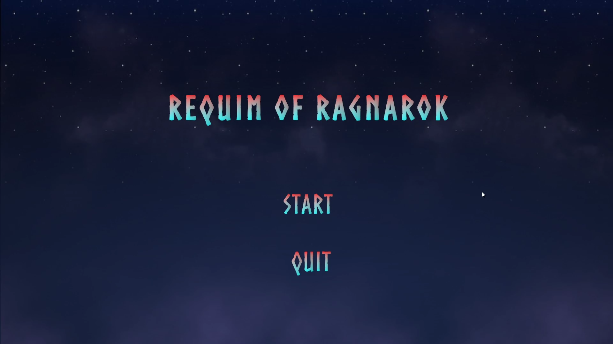

Game Portfolio


Game Developer & Web Developer
I’m a tech nerd and love to learn new things, whether it is simple or complex topics and concepts.
I’m passionate about working with people in general. Whether it is game development or web development.
I always try to make everything work together as a whole.
I aspire to work in an environment where everyone has an equal opportunity to grow, learn and master things at the same time.
Oh and of course having fun :D
I am open to connections and conversations for new potential opportunities and networking.
Skills
Experience
Education
I love making solid game and level design, and narrative design for your game(s) both in Unity and Unreal.
Learn moreI primarily personal portfolio and blog website. Setting up and maintaining ecommerce shop. Primarily working in Front-end.
Learn moreI provide a clear vision to make sure projects are finished. All through Agile methodologies.
Learn more